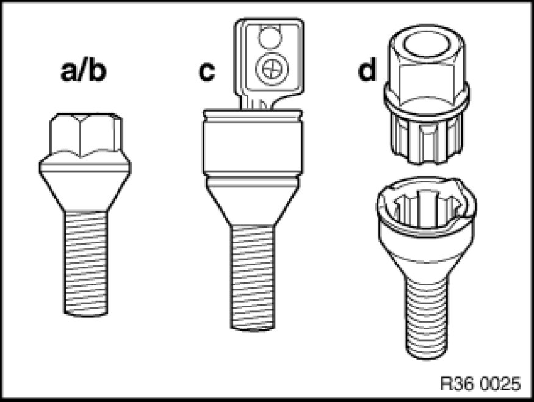

Removing or Installing Front or Rear Wheel
36 10 300 - Removing or installing front or rear wheel

Special tools required:
- 36 1 120 36 1 120 Lever
- 36 1 250 36 1 250 Wheel Hub Grinder
- 36 1 300 36 1 300 Set of Wheel Stud Adapters

Important!
Observe safety instructions on raising the vehicle 00 .. ... Lifting Vehicle With A Lifting Platform.
Follow instructions on initializing Run Flat Indicator 36 11 000 Initializing Run Flat Indicator (RPA) (RPA).
After completing installation, check again that all wheel bolts are tightened to specified torque.
Tightening torque 36 10 1AZ Wheels.

Observe the following procedure to prevent shift errors and imbalance:
- Loosen wheel bolts.
- Wheel positioned with valve facing down.
- If several wheels are simultaneously removed, mark installation location of wheels on tires (e.g. with a piece of chalk).
- Mark out wheel to wheel hub.
- Mark out lockable wheel bolt in relation to wheel.
- Release wheel bolts, remove wheel.
Important!
The following contact faces must be free from grease and clean:
- between brake disc and disc wheel
- between brake disc and wheel hub
Important!
Do not operate special tool 36 1 250 36 1 250 Wheel Hub Grinder with an impact screwdriver!
Remove dirt, grease residues and corrosion from contact face (1) with a drill and special tool 36 1 250 36 1 250 Wheel Hub Grinder.
Note:
Degrease contact face with universal cleaner, refer to BMW Parts Service.
If there are grease residues in the area of the wheel stud bore, the brake disc must be removed and cleaned.
Important!
Do not operate special tool 36 1 250 36 1 250 Wheel Hub Grinder with an impact screwdriver!
Remove dirt, grease residues and corrosion from contact face (1) with a drill and special tool 36 1 250 36 1 250 Wheel Hub Grinder.
Note:
Degrease contact face with universal cleaner, refer to BMW Parts Service.
Check brake disc retaining bolt (1) for secure seating.
Important!
Mounting bolt (1) must not under any circumstances protrude over contact surface (2) between brake disc and disc wheel.
Tightening torque brake disc retaining bolt:
Front axle 34 11 1AZ 34 11 Front Brake.
Rear axle 34 21 1AZ 34 21 Rear Brake.
Apply a thin coat of grease to wheel centering (1) in disc wheel.
Note:
Refer to BMW Service Operating Fluids, Main Group 36.

Wheel studs with taper:
a) - Wheel bolt - galvanized
b) - Wheel bolt - black chrome plated
c) - Wheel bolt - black chrome plated and lockable
d) - Lockable wheel stud with adapter, black chrome-plated
Note:
To release and tighten down lockable wheel stud, use a matching adapter from special tool 36 1 300 36 1 300 Set of Wheel Stud Adapters.
Clean wheel bolts and check threads for damage, replace, if necessary.
Replace rusty wheel bolts.
Important!
Do not apply oil to wheel bolts.
Important!
Do not under any circumstances use an impact or power screwdriver to tighten down the wheel bolts (in diagonal sequence); this must be done by hand.

Important!
Disc wheel must rest uniformly against brake disc.
If the wheel bolts/rims are not BMW-original, it will be necessary to retighten the wheel bolts on account of settling.
Fit wheel studs and evenly tighten crosswise by hand in order to center the disc wheel.
Tighten down wheel bolts in crosswise sequence with a calibrated torque wrench to prescribed tightening torque.
Tightening torque 36 10 1AZ Wheels.
Note:
For wheels with Styling 90 wheel cover.
The wheel cover can be removed for cleaning and removal of foreign objects.
Fit special tool 36 1 120 36 1 120 Lever (3) as shown on rim (1) (near valve).
Engage removal fork of special tool 36 1 120 36 1 120 Lever (3) in wheel cover (2).
Pull off wheel cover (2) with handle of special tool 36 1 120 36 1 120 Lever (3).